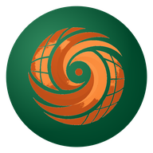

TC-ATLAS
Tropical Cyclone Analysis Tool for Live and Archived Structure
Live monitoring of every active tropical cyclone, with airborne radar, reconnaissance and best-track archives for studying storm structure.
— active TCs
·
Monitor refreshed —
·
1,510 TC-RADAR analyses · 1997–2024
Active now
Real-Time Monitor
Track all active tropical cyclones worldwide with live geostationary infrared satellite imagery from GOES-East, GOES-West, and Himawari-9.
Global
Coverage
GOES & Himawari
Satellites
Recon
Follow active hurricane-hunter missions live: flight-level winds, dropsondes, VDMs, SEAR surface-wind estimates and tail Doppler radar analyses, with an archive of every 2026 flight.
Live
Missions
P-3 & G-IV
Aircraft
Global Archive
Browse the complete IBTrACS tropical cyclone record from 1842 to present with satellite imagery, intensity timelines, reconnaissance, and multi-storm comparison tools.
14,000+
Storms
7
Basins
1842–2025
Coverage
TC-RADAR
Explore 1,500+ post-processed airborne Doppler radar analyses with interactive 3D wind fields, cross-sections, azimuthal means, and multi-variable visualization spanning 1997–2024.
1,510
Analyses
91
Storms
1997–2024
Coverage
TC-RADAR Composites
Build custom composite analyses from the TC-RADAR database. Filter by intensity, shear, tilt, motion, and more to reveal systematic structural patterns across tropical cyclones.
12+
Variables
Flexible
Filters
TC Climatology
Best-track statistics by basin (ACE, RI, intensity, LMI), an ERA5 reanalysis globe for compositing by climate index, and a new Subseasonal subview for binning genesis & RI by MJO and BSISO phase.
3
Sub-views
14+
Indices
MJO/BSISO
Phase composites
Popular starting points
See what's happening now
Live global IR satellite composite tracking every active tropical cyclone.
Step inside Irma's Cat-5 eyewall
Airborne Doppler radar · 155 kt · 5 Sep 2017 · full 3D wind field.
Browse 14,000+ historical storms
Every named TC since 1842 · tracks, intensity, climatology, comparison.
Recent Updates
TC-ATLAS is actively maintained — new data sources, analysis tools, and UI improvements are added continuously.